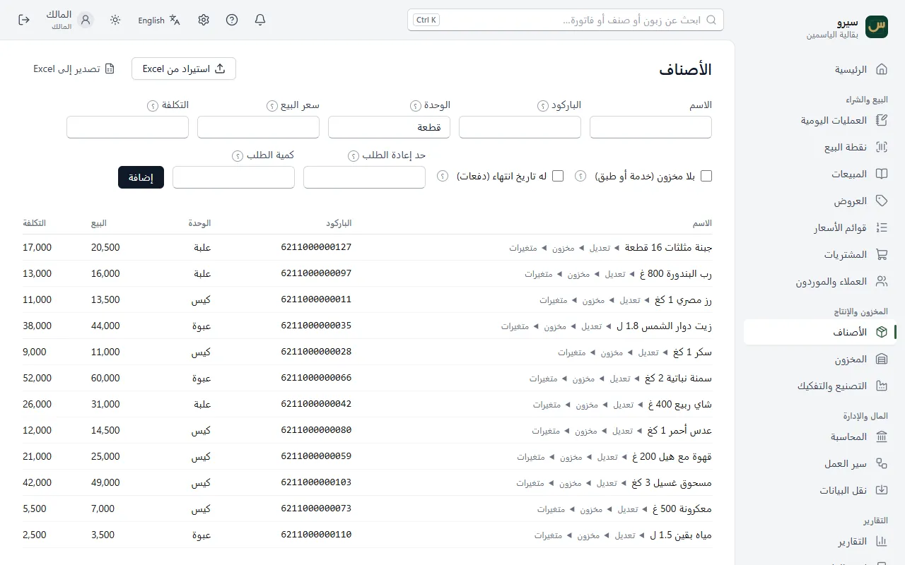
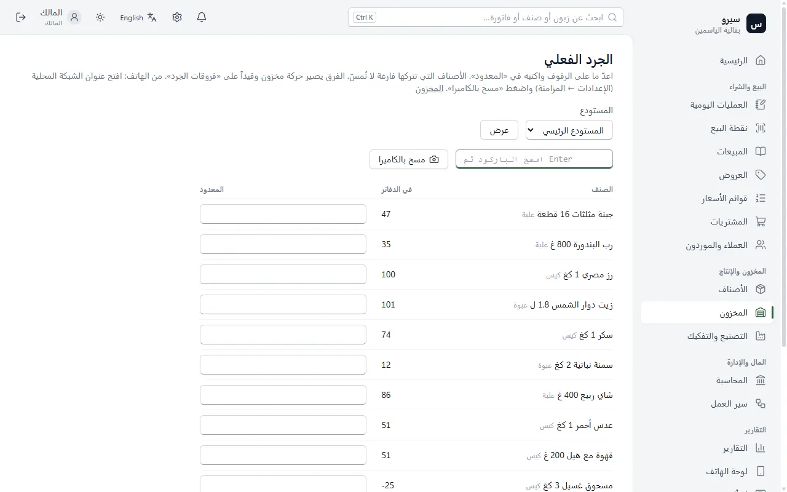

المخزون
كل صنف بباركوده وسعره ووحدته. الكميات تتغيّر وحدها مع البيع والشراء، والجرد يصحّح الفرق.
إضافة صنف
- افتح الأصناف.
- اكتب الاسم، والباركود إن وُجد، والوحدة وسعر البيع.
- اضغط إضافة.
- بلا مخزون: لخدمة أو طبق لا يُعدّ.
- له تاريخ انتهاء: للأدوية والأغذية؛ يبيع البرنامج الأقرب انتهاءً أولاً.
- حد إعادة الطلب: حين ينزل الصنف تحته يقترحه البرنامج للشراء.

الجرد
- افتح المخزون ← الجرد الفعلي واختر المستودع.
- اكتب الكمية المعدودة لكل صنف، أو امسح الباركود بـ مسح بالكاميرا.
- اضغط اعتماد الجرد. يُصحَّح المخزون ويُقيَّد الفرق نقصاً أو زيادة.

عدة مستودعات؟ صفحة المخزون تعرض كل مستودع وحده، والنقل بينها يحفظ الكميات ولا يغيّر الحسابات.